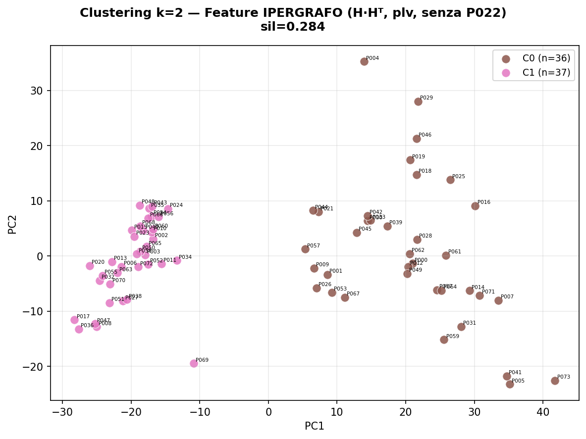
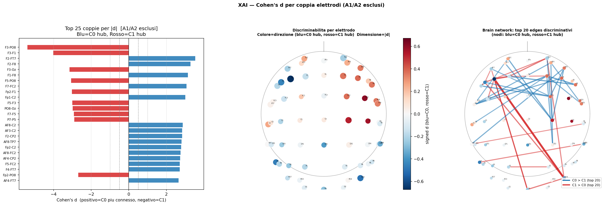
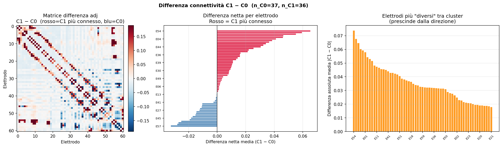
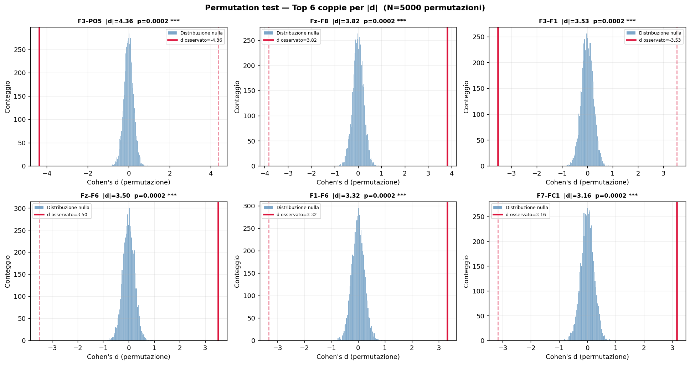
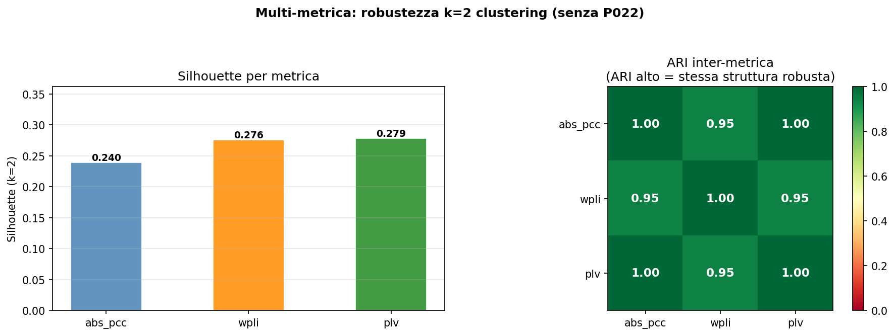
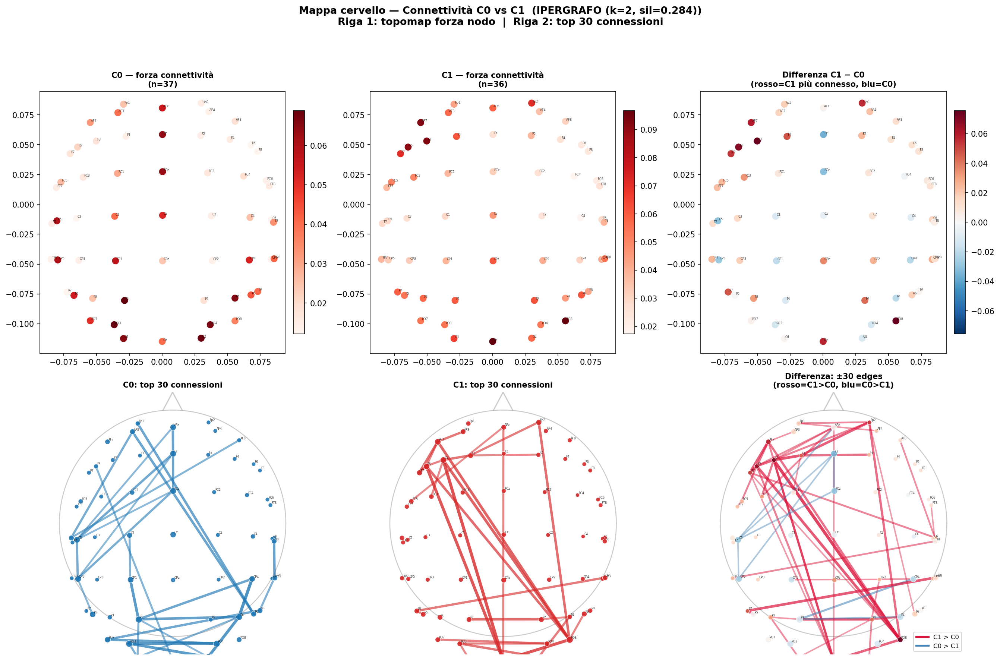

Due fenotipi di connettività stabili, validati contro artefatti e circular analysis. Silhouette = 0.284.
Mann-Whitney bAcc C0 vs C1: p = 0.800 (ns). La connettività strutturale non spiega la variabilità inter-soggetto nella decodifica.
110 parole × 5 sessioni
abs_pcc
1 matrice per soggetto
FEAT_G per soggetto
→ KMeans k=2
~36 / ~37 sogg






- Hub pairwise §17: F2, C2, FC2
- Top pair C0>: F2–FT7 d=+3.5, F2–F8 d=+3.3
- Iperedge §19 top (rimosso): E20 — FC4, FC2, FC6, FT8, FCz
- Cohen's d massimo C0>: +3.5
- Hub pairwise §17: F3, PO8 (cross-emisferico)
- Top pair C1>: F3–PO8 d=−5.4, F3–Oz d=−3.2
- Iperedge §19 top (rimosso): E09 — PO3, F3, F5, PO5, F1, F7, AF7
- Cohen's d massimo C1>: −5.4
🔍 Debug: top-10 nodi di E09 (iperedge C1> rimosso)
| Rank | Elettrodo | Peso medio | Emisfero | Regione |
|---|---|---|---|---|
| 1 | PO3 | 0.562 | SX | Parieto-Occipitale |
| 2 | F3 | 0.503 | SX | Frontale |
| 3 | F5 | 0.471 | SX | Frontale |
| 4 | PO5 | 0.389 | SX | Parieto-Occipitale |
| 5 | F1 | 0.310 | SX | Frontale |
| 6 | F7 | 0.253 | SX | Frontale |
| 7 | AF7 | 0.235 | SX | Frontale |
| 8 | FT7 | 0.173 | SX | Fronto-Centrale |
| 9 | Fz | 0.167 | Z | Frontale |
| 10 | FC5 | 0.153 | SX | Fronto-Centrale |
| 28 | PO8 | 0.044 | DX | Parieto-Occipitale |
PO8 è rank #28 con peso 0.044 — non appartiene al modulo E09. La connessione F3–PO8 cross-emisferica è un link pairwise, non un modulo di co-attivazione.
- → Clustering: KMeans su 1830 feature pairwise
- → XAI §17: Cohen's d per coppia di elettrodi
- → Validazione §18: permutation test su coppie
- → Cross-metric §12/§13: abs_pcc, wPLI, PLV
Tutto grounded direttamente sul segnale EEG grezzo preprocessato.
- ✗ §19: Cohen's d per iperedge (rimosso)
- ✗ §20: permutation test su iperedge (rimosso)
H_pruned viene da DHSLP — un modello addestrato sui dati. Usarlo per XAI significa analizzare le feature interne del modello, non il segnale grezzo. Non coerente con il clustering (che è pairwise su abs_pcc).
Permutation test §18: 5000 shuffle di C0/C1. In 0/5000 shuffle si raggiunge d=5.4. 25/25 coppie top p<0.001.
ARI(abs_pcc, PLV) = 1.00. ARI(abs_pcc, wPLI) = 0.95. Stessa struttura con metrica immune al volume conduction.
Varianza p=0.504, kurtosi p=0.170, gamma p=0.068 — tutti ns. Il clustering non è guidato da artefatti.
Mann-Whitney bAcc C0 vs C1: p = 0.800 (ns). Cluster reali ma non predittivi di performance.
| Test | Metrica | Valore | Significato |
|---|---|---|---|
| Post-hoc bAcc | Mann-Whitney C0 vs C1 | p = 0.800 (ns) | I cluster NON si decodificano diversamente — null result principale |
| Qualità — varianza | Mann-Whitney | p = 0.504 (ns) | No differenze di ampiezza segnale |
| Qualità — kurtosi | Mann-Whitney | p = 0.170 (ns) | No artefatti impulsivi differenziali |
| Qualità — gamma | Mann-Whitney | p = 0.068 (ns) | No differenze di potenza muscolare |
| Stabilità media | rel_std globale | 0.089 ± 0.020 | Firma individuale stabile (soglia critica: 0.3) |
| rel_std C0 vs C1 | Mann-Whitney | p = 0.0002 | C1 (0.095) più variabile di C0 (0.077) — coerente con network a lunga distanza |
| Silhouette grafo | KMeans k=2 | 0.240 | Struttura discreta nel grafo pairwise |
| Silhouette ipergrafo | KMeans k=2 | 0.284 | Struttura più netta con metrica ipergrafo |
| Cross-metric ARI | abs_pcc vs PLV | 1.00 | Identici cluster con PLV |
| Cross-metric ARI | abs_pcc vs wPLI | 0.95 | Quasi identici con wPLI (immune volume conduction) |
| XAI top pair C1> | Cohen's d F3–PO8 | d = −5.4 | Effect size estremo — C1 domina questa connessione cross-emisferica |
| XAI top pair C0> | Cohen's d F2–FT7 | d = +3.5 | C0 domina connessione fronto-centrale |
| Permutation test | Top 25 coppie, N=5000 | 25/25 p < 0.001 | Circular analysis escluso |
Caricamento feature
Carica cache .npz da EEG_16. Filtra P022. Produce FEAT_G e FEAT_H (73×1830).
Perché P022 è outlier?
PCA su tutti 74 soggetti. P022 = singleton isolato da tutti i cluster. Escluso da tutto il resto.
Clustering k=2
StandardScaler → PCA 20 → KMeans k=2. Grafo sil=0.240, Ipergrafo sil=0.284. Usato ipergrafo come principale.
Nomi cluster
CLUSTER_NAMES: C0="Fronto-motor", C1="Fronto-occipital". Motivazione da §10/§17.
Post-hoc: bAcc per cluster
Accuracy da EEG_12/13b. Mann-Whitney. p = 0.800 (ns) — null result principale.
ARI grafo vs ipergrafo
Concordanza assegnazioni. ARI alto → struttura robusta alla rappresentazione scelta.
PCA Loadings
Loadings PC1 sui 1830 feature → quali coppie guidano la separazione.
Mappa differenza C1−C0
Per elettrodo: diff[i] = mean_j(adj_C1 − adj_C0). C1 hub: PO8, F3, F5, Oz. C0 hub: C2, FC2, CP2.
Visualizzazione + variabilità
Plot raw, adj, H·Hᵀ per cluster. Grid intra-cluster per soggetto.
Multi-metrica ARI
abs_pcc, wPLI, PLV. ARI=1.00 e 0.95 → struttura robusta alla metrica.
Qualità segnale
Varianza, kurtosi, gamma. Tutti ns → clustering non da artefatti.
Visualizzazioni avanzate
Topomap MNE, brain connectivity map, grid per-soggetto node strength (lineare e log), stabilità media (rel_std=0.089).
XAI: Cohen's d pairwise
Effect size per 1830 coppie. A1/A2 esclusi. F3–PO8 d=−5.4. Brain network top 25 coppie.
Permutation test (N=5000)
Shuffle label × 5000. 25/25 p < 0.001 → circular analysis escluso.
XAI Ipergrafo (rimosso)
Cohen's d per iperedge su H_pruned da DHSLP. Rimosso: H_pruned dipendente dal modello, non dal segnale grezzo. Non coerente con clustering pairwise.
Permutation ipergrafo (rimosso)
Permutation test su iperedge. Rimosso insieme a §19.
⚠ A1/A2 mastoid reference
E00 (A1) e E07 (A2) sono reference electrodes, non canali EEG reali. Sempre esclusi in §17/§18 con EXCLUDE_ELEC_D = {0, 7}. Le loro "connessioni" sono artefatti di riferimento.
⚠ Circular analysis
KMeans usa le stesse 1830 feature su cui si calcola Cohen's d. Rischio reale, chiuso dal permutation test §18: 25/25 coppie p<0.001 con N=5000 shuffle. Nessun shuffle casuale raggiunge d=5.4.
⚠ H_pruned ≠ segnale grezzo
H_pruned viene da DHSLP addestrato. Usarlo per XAI è analizzare le rappresentazioni interne del modello. §19/§20 rimossi per questo: non grounded sul segnale, non coerenti con clustering pairwise.
ℹ Granularità soggetto
Tutto opera a livello di soggetto: 1 vettore 1830-dim = media di ~525 adj trial. La firma è stabile (rel_std=0.089 ± 0.020, soglia critica 0.3).
ℹ rel_std vs L2 assoluta
Per confrontare variabilità tra C0 e C1 usare sempre rel_std = std(L2)/mean(L2). La L2 assoluta è confusa dalla scala delle medie che differisce per costruzione tra cluster.
ℹ Interpretazione anatomica
Le etichette ("area di Broca", "corteccia visiva") sono compatibili con le regioni degli elettrodi 10-20, non localizzazioni di sorgente. EEG non ha risoluzione spaziale sufficiente per affermazioni precise.
| # | Task | Stato |
|---|---|---|
| 1 | Rimuovere P022 + investigare cluster C0 vs C1 | ✓ Completato |
| 2 | Riarrangiare plot grafo/ipergrafo per regione cerebrale | Prossimo |
| 3 | Gamma p=0.07 — investigare per singolo elettrodo | Saltato (non significativo) |
| 4 | Allenare modelli 200 epoch, patience 70, log train_val_gap | In attesa Optuna |
| 5 | Optuna su EEG_13b (50 trial, 25 soggetti top+mid+bot) | In corso |